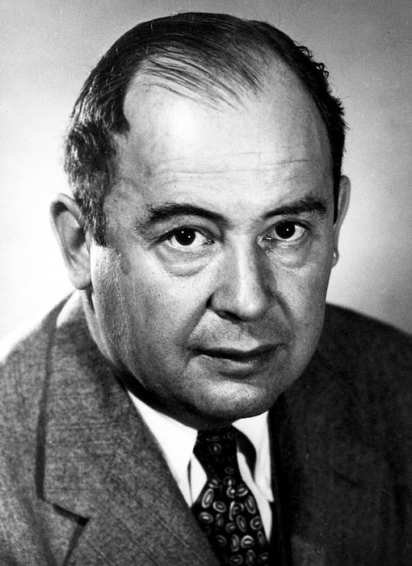

Suppose a point must satisfy several constraints, and projecting onto each constraint separately is easy. Can we project onto their intersection by alternating these elementary operations? This is an attractive idea in imaging, statistics, optimization—and even Sudoku.
The answer depends on what we mean by “project.” Reaching some feasible point and reaching the nearest feasible point are different tasks. A picture with two halfplanes is enough to separate them. It also introduces three beautiful algorithms: alternating projections, Dykstra’s corrections, and Douglas–Rachford reflections.
We will first work with closed convex sets, where convergence is understood, then keep the same operations and venture into a nonconvex puzzle. In that second setting, a successful animation is an experiment, not a convergence theorem.
The geometry of a projection
For a nonempty closed convex set \(A\subset\mathbb R^d\), its Euclidean projection is the unique nearest point
\[ P_Az=\operatorname*{arg\,min}_{a\in A}\frac12\lVert z-a\rVert^2. \]The displacement \(z-P_Az\) is normal to \(A\) at the projected point. The useful quantitative form is the following.
Lemma 1 (projection inequality). For every \(a\in A\),
\[ \lVert P_Az-a\rVert^2+\lVert z-P_Az\rVert^2 \le\lVert z-a\rVert^2. \]Proof: the first-order condition and one expansion
Let \(p=P_Az\). The feasible segment \(p+t(a-p)\), \(0\le t\le1\), cannot decrease the squared distance at \(t=0\). Differentiating gives \(\langle z-p,a-p\rangle\le0\). Now expand:
\[ \begin{aligned} \lVert z-a\rVert^2 &=\lVert z-p\rVert^2+\lVert p-a\rVert^2\\ &\quad+2\langle z-p,p-a\rangle. \end{aligned} \]The last term is nonnegative, proving the claim. \(\square\)
For two such sets \(A,B\) with \(A\cap B\ne\varnothing\), feasibility asks for any point in the intersection. Best approximation asks for the particular point \(P_{A\cap B}z_0\). The second problem remembers the starting point as an objective, not merely as an initialization.
Alternating projections forget the original objective

The simplest iteration is
\[ z_{k+1}=P_BP_Az_k. \]This is alternating projection, often called POCS: projection onto convex sets. The subspace case is associated with von Neumann [1]; the general feasibility theory is reviewed by Bauschke and Borwein [2].
Theorem 1 (finite-dimensional alternating projections). Under the convex assumptions above, \(z_k\) converges to a point of \(A\cap B\). This limit need not be \(P_{A\cap B}z_0\).
Proof of convergence: every projection spends squared distance
Set \(y_k=P_Az_k\), and fix any \(a\in A\cap B\). Lemma 1 twice gives
\[ \lVert z_{k+1}-a\rVert^2 +\lVert z_k-y_k\rVert^2+\lVert y_k-z_{k+1}\rVert^2 \le\lVert z_k-a\rVert^2. \]Thus \((z_k)\) is bounded, and summing shows that both projection displacements tend to zero. A convergent subsequence has a limit \(z_\star\in A\cap B\), by closedness. The displayed inequality also says that \(\lVert z_k-z_\star\rVert\) is nonincreasing; since it tends to zero along that subsequence, it tends to zero along the whole sequence. \(\square\)
If both sets are affine subspaces, the limit is the nearest point. Let \(L\) be the direction subspace of \(A\cap B\). Orthogonal projection onto either affine set preserves the component along \(L\), so the iterates remain in \(z_0+L^\perp\). Their feasible limit in this affine space is the unique nearest point. For general convex sets, that preservation property disappears.
A counterexample you can draw
Take
\[ A=\{(x,y):y\ge0\},\quad B=\{(x,y):y\ge x\},\quad z_0=(2,-1). \]Alternating projections perform
\[ (2,-1)\xrightarrow{P_A}(2,0)\xrightarrow{P_B}(1,1). \]The last point already belongs to the intersection, so the algorithm stops. Yet \(P_Bz_0=(1/2,1/2)\) also belongs to \(A\). Since it minimizes distance over all of \(B\), it is also the nearest point over the smaller set \(A\cap B\). The squared distances are \(5\) for the POCS limit and \(9/2\) for the true projection.
Dykstra: remember the normal displacements
Dykstra’s algorithm adds two correction vectors. Initialize \(z=z_0\) and \(p=q=0\), then repeat the following full cycle:
\[ \begin{aligned} a&=z+p,& y&=P_Aa,&p&\leftarrow a-y,\\ b&=y+q,& z&\leftarrow P_Bb,&q&\leftarrow b-z. \end{aligned} \]The old displacement is added back before the next projection onto the same set. Unlike plain alternation, the algorithm retains the information needed to solve the original distance-minimization problem.
Why the corrections remember the starting point
After each full cycle, a direct addition of the update formulas gives the invariant
\[ z+p+q=z_0. \]The corrections are normal displacements for their respective sets: \(\langle p,a-y\rangle\le0\) for \(a\in A\), and \(\langle q,b-z\rangle\le0\) for \(b\in B\). If a full state is fixed, its two projected points coincide, \(y=z\). For any \(w\in A\cap B\), adding the two normal inequalities then gives
\[ \langle z_0-z,w-z\rangle =\langle p+q,w-z\rangle\le0. \]This is precisely the optimality condition for \(z=P_{A\cap B}z_0\). The correction invariant explains the objective being solved; the general convergence theorem below does not require the correction vectors themselves to converge.
Theorem 2 (Dykstra’s best-approximation theorem). Under the same convex assumptions, the Dykstra iterates \(z\) converge to \(P_{A\cap B}z_0\) [4].
Dykstra introduced the cone version in 1983 [3], followed by the general closed-convex-set result of Boyle and Dykstra [4]. A useful way to understand the corrections is as dual coordinates: minimize the squared distance subject to both constraints, and alternate dual updates while retaining each constraint’s previous contribution. Tibshirani gives this connection explicitly [5]. In our halfplane example, the second full cycle reaches \((1/2,1/2)\).
The original algorithm is not being replaced by a nearest-point shortcut in the experiment below: its correction vectors are updated at every cycle.
Douglas–Rachford: reflect, then average
Instead of correcting a projection, reflect across the set. Write \(R_A=2P_A-I\). Douglas–Rachford uses
\[ z_{k+1}=\frac12(I+R_BR_A)z_k =z_k+P_B(2P_Az_k-z_k)-P_Az_k. \]The auxiliary iterate \(z_k\) need not be feasible. The point of interest is its shadow \(P_Az_k\).
Theorem 3 (convex Douglas–Rachford). In finite dimensions, with \(A,B\) as above, the iterates converge to a fixed point of this operator and their shadows converge to a point of \(A\cap B\). This is not in general a best-approximation algorithm [7].
Proof: the average of the identity and a nonexpansive map
The projection optimality inequalities imply firm nonexpansiveness:
\[ \lVert P_Ax-P_Ay\rVert^2 \le\langle P_Ax-P_Ay,x-y\rangle. \]Expanding the squared norm of the reflected difference therefore shows
\[ \lVert R_Ax-R_Ay\rVert^2 \le\lVert x-y\rVert^2. \]The same holds for \(B\), so \(Q=R_BR_A\) is nonexpansive. If \(T=(I+Q)/2\) and \(Tw=w\), the parallelogram identity gives
\[ \lVert Tz-w\rVert^2+\lVert Tz-z\rVert^2 \le\lVert z-w\rVert^2. \]Such a fixed point exists: every point of \(A\cap B\) is one. The same boundedness, vanishing-step, and subsequence argument as in Theorem 1 shows convergence to a fixed point \(z_\star\). Continuity of \(T\) identifies any cluster point as fixed. Finally, \(Tz_\star=z_\star\) implies
\[ P_B(2P_Az_\star-z_\star)=P_Az_\star. \]The right side is in \(A\) and, by the left side, in \(B\). Continuity of projection proves shadow convergence. \(\square\)
The name comes from Douglas and Rachford’s 1956 heat-equation splitting method [6]. The reflection formula is its later feasibility incarnation. The history and modern combinatorial applications are discussed by Aragón Artacho, Borwein, and Tam [7].
Sudoku: five easy projections in a larger space
Encode a \(9\times9\) board by a tensor \(X\in\mathbb R^{9\times9\times9}\): \(X_{ijk}=1\) means that cell \((i,j)\) contains digit \(k\). A valid board lies in five sets:
- \(C_1\): for every cell, \((X_{ijk})_{k=1}^9\) is one-hot.
- \(C_2\): for every row and digit, \((X_{ijk})_{j=1}^9\) is one-hot.
- \(C_3\): for every column and digit, \((X_{ijk})_{i=1}^9\) is one-hot.
- \(C_4\): for every block and digit, its nine cell entries are one-hot.
- \(C_5\): every given clue cell is fixed to its prescribed one-hot vector; all other coordinates are free.
A one-hot vector is one of the nine standard basis vectors. Its nearest point to a score vector \(x\) is \(e_k\) for an index maximizing \(x_k\), because \(\lVert x-e_k\rVert^2=\lVert x\rVert^2+1-2x_k\). We choose the smallest index in a tie. Each group in a given constraint is disjoint from the others, so these groupwise choices give an exact Euclidean projection. Projection onto \(C_5\) simply overwrites the clue coordinates.
The intersection encodes the puzzle exactly, but the first four sets are highly nonconvex. To reuse a two-set algorithm, lift to five copies:
\[ C=C_1\times\cdots\times C_5,\qquad D=\{(X,X,X,X,X):X\in\mathbb R^{9\times9\times9}\}. \]Projection onto \(C\) applies the five projections separately. Projection onto the diagonal \(D\) averages the five copies. We apply precisely the Douglas–Rachford formula above with \(A=C\), \(B=D\), as in the product-space approach of [7]. Theorem 3 no longer applies: the reflections of these nonconvex sets need not be nonexpansive.
Distinguish a displayed board from the real-valued state
Write the five components of the product shadow \(P_Cz_k\) as \(X_k^{(1)},\ldots,X_k^{(5)}\). Its average and cellwise rounded board are
\[ U_k=\frac15\sum_{s=1}^5X_k^{(s)},\qquad d_k(i,j)=\operatorname*{arg\,max}_{1\le\ell\le9}(U_k)_{ij\ell}. \]Ties choose the smallest digit, and clues are restored for display. The entries of \(U_k\) are scores, not probabilities. This rounding is a diagnostic only; it is never substituted back into the reflection update.
For the 27 units (nine rows, nine columns, nine blocks), let \(n_{Q,\ell}\) count displayed occurrences of digit \(\ell\) in unit \(Q\). We track
\[ V_k=\sum_Q\sum_{\ell=1}^9|n_{Q,\ell}-1|,\qquad r_k=\left(\sum_{s=1}^5\lVert X_k^{(s)}-U_k\rVert_F^2\right)^{1/2}. \]The integer \(V_k\) describes the rounded board; \(r_k\) describes disagreement between unrounded shadows. We separately report the norm of the clue-coordinate mismatch of \(U_k\): restoring clues in the display must not hide a real-valued residual. A solution is accepted only after an independent exact check of every row, column, block, and clue. A valid rounded board can appear before the residual vanishes.
Numerical experimentation
First compare the three trajectories on the halfplanes. Then advance Sudoku one iteration at a time, or play the reflections. Red marks unit conflicts; faint digits show ambiguous score choices. Both residual traces may jump, and the rounded board may get worse before getting better. Restarting the same seed reproduces the same experiment; changing the seed can change the outcome.
No backtracking solver or stored solution drives the animation. The experiment stops after 5,000 iterations if it has not certified a solution. This is not a claim that a restart will always succeed. The contrast is the point: exact elementary projections give rigorous convex algorithms, but the same formulas become heuristics when the constraints are nonconvex.
Bibliography
- John von Neumann. Functional Operators, Volume II: The Geometry of Orthogonal Spaces. Annals of Mathematics Studies 22, Princeton University Press, 1950. Book.
- Heinz H. Bauschke and Jonathan M. Borwein. On Projection Algorithms for Solving Convex Feasibility Problems. SIAM Review 38(3), 367–426, 1996. Paper · Author PDF.
- Richard L. Dykstra. An Algorithm for Restricted Least Squares Regression. Journal of the American Statistical Association 78(384), 837–842, 1983. Paper.
- James P. Boyle and Richard L. Dykstra. A Method for Finding Projections onto the Intersection of Convex Sets in Hilbert Spaces. Advances in Order Restricted Statistical Inference, Lecture Notes in Statistics 37, 28–47, 1986. Chapter.
- Ryan J. Tibshirani. Dykstra’s Algorithm, ADMM, and Coordinate Descent: Connections, Insights, and Extensions. NeurIPS 2017. Author PDF.
- Jim Douglas Jr. and Henry H. Rachford Jr. On the numerical solution of heat conduction problems in two and three space variables. Transactions of the American Mathematical Society 82, 421–439, 1956. Paper.
- Francisco J. Aragón Artacho, Jonathan M. Borwein, and Matthew K. Tam. Recent Results on Douglas–Rachford Methods for Combinatorial Optimization Problems. Journal of Optimization Theory and Applications 163, 1–30, 2014. Paper.